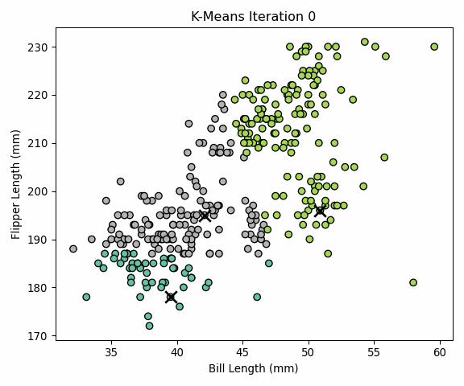
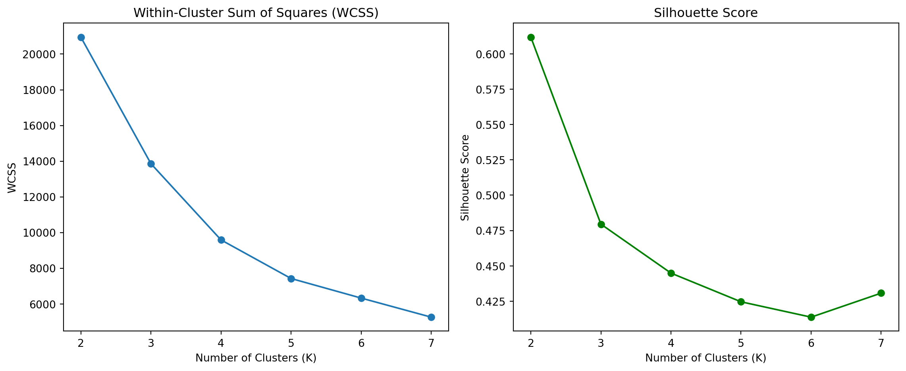

HW4 Part 1: Unsupervised Learning for Customer Segmentation
Clustering with Bill and Flipper Length to Segment Penguins
Author
Hui Liu
Published
June 7, 2025
1a. K-Means Clustering on Palmer Penguins
This analysis demonstrates how unsupervised learning can be used to segment customers (or in this case, penguins) based on physical characteristics, which is analogous to segmenting markets in marketing analytics.
Data Preparation
We used the Palmer Penguins dataset and selected two numerical features:
bill_length_mm
flipper_length_mm
After removing missing values, we applied our custom implementation of the K-Means clustering algorithm.
Read Data
import pandas as pdimport matplotlib.pyplot as pltdf = pd.read_csv("./palmer_penguins.csv")df_clean = df.dropna(subset=["bill_length_mm", "flipper_length_mm"])X = df_clean[["bill_length_mm", "flipper_length_mm"]].valuesdf_clean.head()
species
island
bill_length_mm
bill_depth_mm
flipper_length_mm
body_mass_g
sex
year
0
Adelie
Torgersen
39.1
18.7
181
3750
male
2007
1
Adelie
Torgersen
39.5
17.4
186
3800
female
2007
2
Adelie
Torgersen
40.3
18.0
195
3250
female
2007
3
Adelie
Torgersen
36.7
19.3
193
3450
female
2007
4
Adelie
Torgersen
39.3
20.6
190
3650
male
2007
Custom K-Means Implementation
We implemented the K-Means algorithm from scratch using Euclidean distance for assignment and centroid updates based on the mean. The algorithm converged after 9 iterations.
Below is a GIF animation showing how the clustering evolves across iterations:

K-Means Clustering Animation
Custom K-Means Algorithm Implementation
import numpy as npimport os# Set random seednp.random.seed(42)# Create a folder to save the step imagesframe_dir ="./kmeans_frames"os.makedirs(frame_dir, exist_ok=True)# Helper: compute Euclidean distancedef euclidean_distance(a, b):return np.linalg.norm(a - b, axis=1)# Save each step's plotdef save_kmeans_step_plot(X, labels, centroids, step, frame_dir): plt.figure(figsize=(6, 5)) plt.scatter(X[:, 0], X[:, 1], c=labels, cmap='Set2', s=40, edgecolor='k') plt.scatter(centroids[:, 0], centroids[:, 1], c='black', s=120, marker='x', linewidths=2) plt.title(f"K-Means Iteration {step}") plt.xlabel("Bill Length (mm)") plt.ylabel("Flipper Length (mm)") plt.tight_layout() plt.savefig(f"{frame_dir}/frame_{step:02d}.png") plt.close()# Custom K-Means implementation with visualization savingdef custom_kmeans(X, k=3, max_iter=10, save_dir=None): n_samples, n_features = X.shape initial_indices = np.random.choice(n_samples, k, replace=False) centroids = X[initial_indices] labels = np.zeros(n_samples)for step inrange(max_iter):# Assign clustersfor i inrange(n_samples): distances = euclidean_distance(X[i].reshape(1, -1), centroids) labels[i] = np.argmin(distances)# Save current stepif save_dir: save_kmeans_step_plot(X, labels, centroids, step, save_dir)# Compute new centroids new_centroids = np.array([X[labels == j].mean(axis=0) for j inrange(k)])# Check for convergenceif np.allclose(centroids, new_centroids):print(f"Converged at step {step}")break centroids = new_centroids# Final plotif save_dir: save_kmeans_step_plot(X, labels, centroids, step +1, save_dir)return labels, centroids# Run custom K-Means and save frameslabels, centroids = custom_kmeans(X, k=3, max_iter=10, save_dir=frame_dir)
Converged at step 9
Create GIF Animation with imageio
import imageio# Generate GIF from saved framesframe_files =sorted([os.path.join(frame_dir, f) for f in os.listdir(frame_dir) if f.endswith(".png")])gif_path ="./kmeans_animation.gif"# Create gifwith imageio.get_writer(gif_path, mode='I', duration=0.6) as writer:for filename in frame_files: image = imageio.imread(filename) writer.append_data(image)gif_path
/tmp/ipykernel_163242/411363490.py:10: DeprecationWarning:
Starting with ImageIO v3 the behavior of this function will switch to that of iio.v3.imread. To keep the current behavior (and make this warning disappear) use `import imageio.v2 as imageio` or call `imageio.v2.imread` directly.
'./kmeans_animation.gif'
Choosing the Number of Clusters
To determine the optimal number of clusters (K), we computed:
Within-Cluster Sum of Squares (WCSS)
Silhouette Score
Both metrics suggested K = 3 as the best choice:
Evaluate Cluster Quality (WCSS & Silhouette)
from sklearn.metrics import silhouette_scorefrom sklearn.cluster import KMeanswcss = []silhouette_scores = []K_range =range(2, 8)for k in K_range: kmeans = KMeans(n_clusters=k, random_state=42, n_init=10) labels = kmeans.fit_predict(X) wcss.append(kmeans.inertia_) silhouette_scores.append(silhouette_score(X, labels))# Plot WCSS and Silhouette Scoresfig, ax = plt.subplots(1, 2, figsize=(12, 5))ax[0].plot(K_range, wcss, marker='o')ax[0].set_title('Within-Cluster Sum of Squares (WCSS)')ax[0].set_xlabel('Number of Clusters (K)')ax[0].set_ylabel('WCSS')ax[1].plot(K_range, silhouette_scores, marker='o', color='green')ax[1].set_title('Silhouette Score')ax[1].set_xlabel('Number of Clusters (K)')ax[1].set_ylabel('Silhouette Score')plt.tight_layout()plt.savefig("kmeans_evaluation_vertical.png")plt.show()

Comparison with Scikit-learn’s KMeans
To validate our custom implementation, we compared the clustering result with scikit-learn’s built-in KMeans function. The cluster assignments and centroid locations are nearly identical, confirming the correctness of our algorithm.
Our custom K-Means algorithm successfully clustered penguins into three meaningful groups using only bill length and flipper length. Evaluation metrics and visual inspection both suggest that K=3 provides a good balance of cohesion and separation. The results also validate well against the standard scikit-learn implementation.